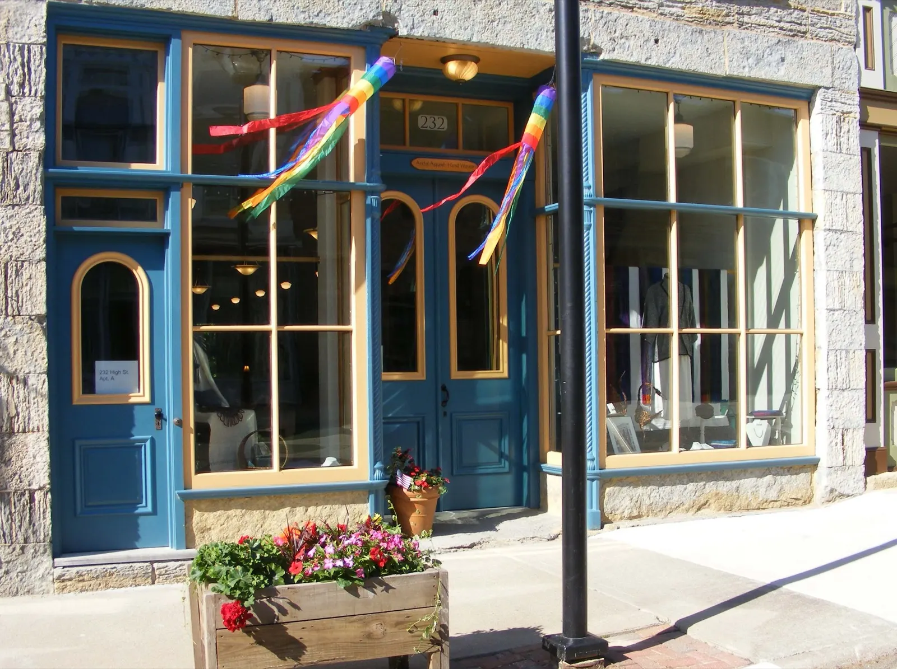
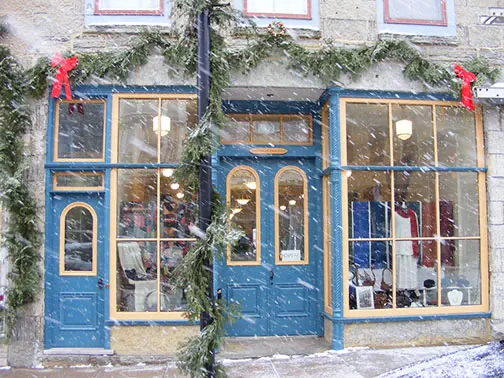
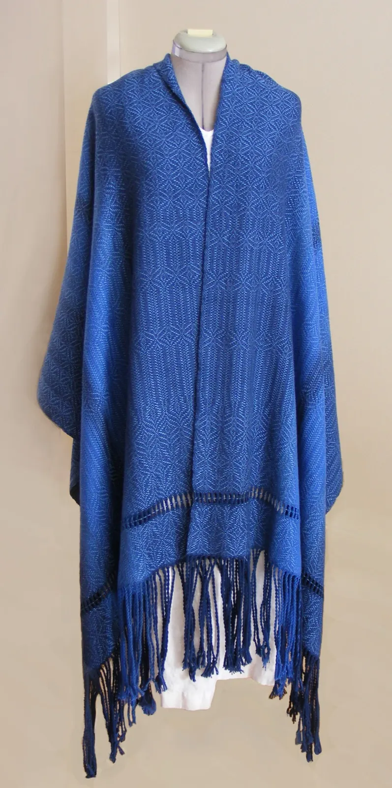
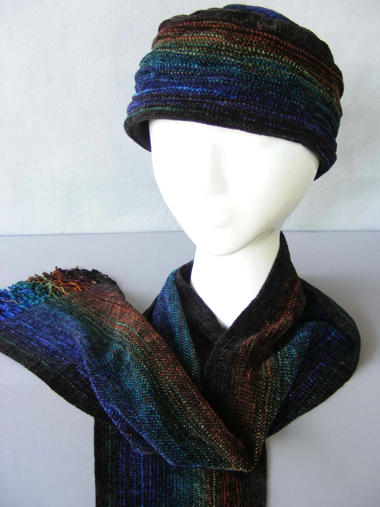
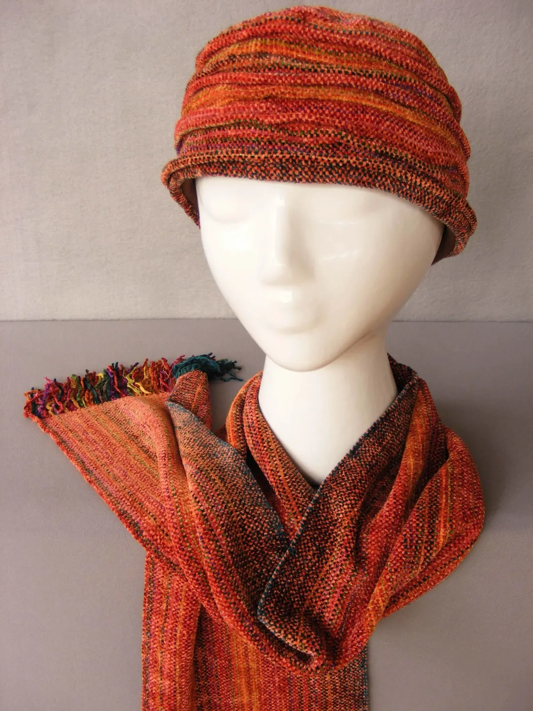
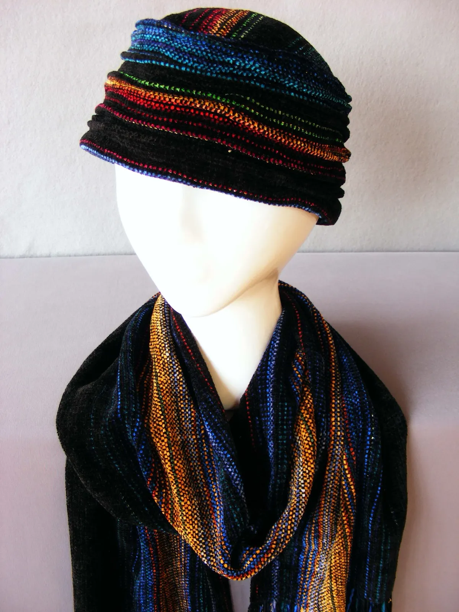
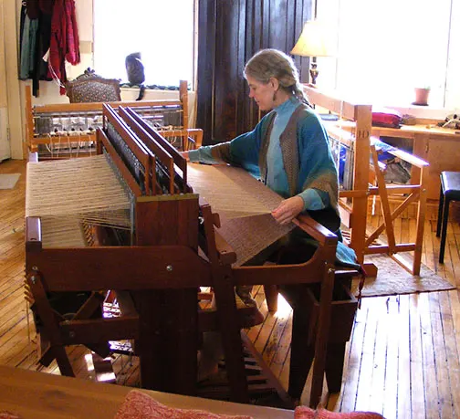
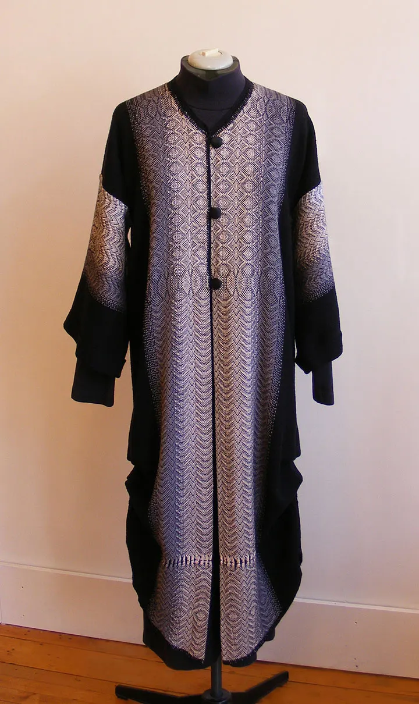
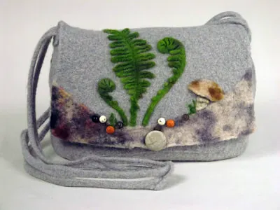
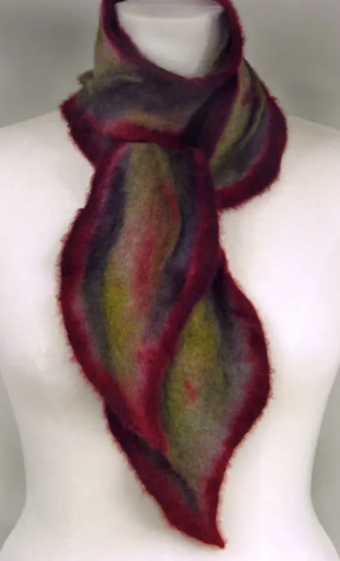

Kathleen Nutter, Mineral Point, Wisconsin
Hand-dyed, handwoven, sewn right here.


Welcome to my studio and shop. I hand-dye natural fiber yarns, weave the fabric, then cut and sew individually designed garments on the premises, in a limestone building on High Street.
- Hand weaving studio and shop
- Mineral Point, settled in 1827
- Cornish limestone from the 1800s
- Looms almost always at work

Handwoven work, from the yarn up.
Every garment starts as natural fiber yarn I dye myself. The fabric comes off my looms, then it is cut and sewn into an individually designed piece. Shawls, coats, hats and scarves, each one made here.



Hats and scarvesChenille and hand-dyed yarns, individually designed.


Made on the premises.
- I hand-dye natural fiber yarns.
- I weave the fabric.
- I cut and sew each garment, designed one at a time.
Ask to see the looms. I'm glad to demonstrate how they work anytime they're "dressed" with fabric in progress, which is almost always.
Also in the shop
Willow sculpture and baskets, jewelry, prints, cashmere scarves, felted purses and woven rugs.


A historic limestone building on the main street.
Artful Apparel is at home in a historic building on the main street of Wisconsin's third oldest city: Mineral Point, settled in 1827. The building is made of the rugged limestone the Cornish used here throughout the 1800s.
Mineral Point sits in the "Driftless" region of southwest Wisconsin, where the glaciers didn't drift. There is some really nice historic lodging, easy walking, and unique shops and galleries.
The whole is greater than the sum of its parts.What the ancient craft of hand weaving, set in this unique space, makes you feel as you walk into the shop.Plan a trip with MineralPoint.com
Come by the shop.
232 High Street
Mineral Point, WI 53565
Current hours, events and photos of new work are posted on the Artful Apparel & More Facebook page. You can also call before you come.
Artful Apparel
Hand Weaving Studio and Shop, Kathleen Nutter